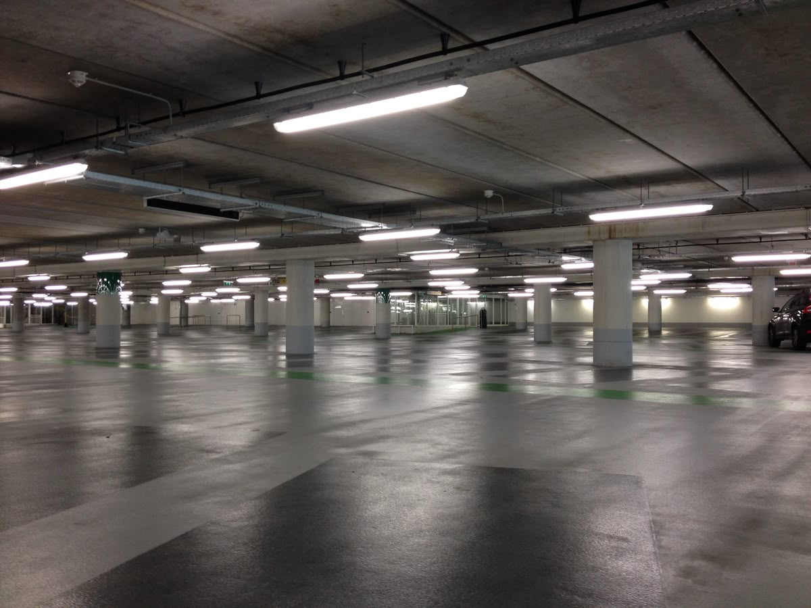

Check live floor availability before choosing a slot.
Reserve a slot in a cleaner, easier booking experience.
Keep the barcode and parking pass ready for entry and payment.
About SNDRA Park
A web-based smart parking reservation system built for faster arrivals and smoother parking operations.
SNDRA Park is a modern smart parking reservation platform designed to help drivers reserve parking slots before they arrive while giving parking staff clearer realtime visibility across the facility. The system combines online booking, live slot monitoring, and booth-side transaction support into one practical workflow that is easier to manage for both users and parking operations.
With SNDRA Park, users can check available parking slots, choose a preferred floor, and secure a slot ahead of time through a simple web-based interface. Realtime status updates make it easier to see which spaces are available, reserved, or occupied, helping reduce unnecessary circling and long searches for parking during busy hours.
How Parking Reservation Works
From slot search to booth entry in a clearer, more organized process.
Check available parking slots
Drivers can review floor availability and view live slot status before leaving for the parking area.
Reserve before arriving
A selected slot can be reserved in advance, giving users better confidence before entering the facility.
Track realtime slot visibility
Live updates help users and booth staff stay aligned on current slot conditions and reservation activity.
Support faster booth management
The parking booth can manage entry, exit, and payment more efficiently with a clearer reservation and slot record.
By connecting drivers, reservation data, realtime slot monitoring, and booth-side operations in one system, SNDRA Park supports a smarter, more efficient, and more convenient parking experience for both motorists and parking management.
Why Use SNDRA Park
Advantages of smart parking reservation
Convenience and time-saving
Drivers spend less time searching for a space and can prepare for parking before arriving on site.
Realtime slot visibility
Live parking status improves decision-making and gives users a clearer picture of slot availability.
Reduced congestion and fuel use
Less circling means reduced traffic pressure inside the parking area and less wasted fuel for drivers.
Faster entry and transaction flow
Booth staff can verify reservations, process movement, and handle payment in a more organized way.
Operational Value
Smarter management for busy parking environments
Beyond convenience for drivers, SNDRA Park also helps parking administrators maintain better slot allocation, cleaner reservation records, and a more consistent user experience across peak hours.
Contact Us
A cleaner contact section for users, staff, and project inquiries.
This updated layout highlights the real essentials first: email, phone, and location, then adds social shortcuts for quick communication.
sndrapark.emulator@gmail.com
Reach out for account concerns, project questions, reservation issues, or collaboration inquiries.
Phone
+63 917 555 0142
Available for parking operations follow-ups, customer support handoff, and direct booth coordination.
Location
SM City Grand Central, Caloocan
Located near Monumento, SNDRA Park provides smart parking solutions in one of Caloocan's busiest areas.
SM City Grand Central, Rizal Ave Ext, Caloocan City
Get Directions